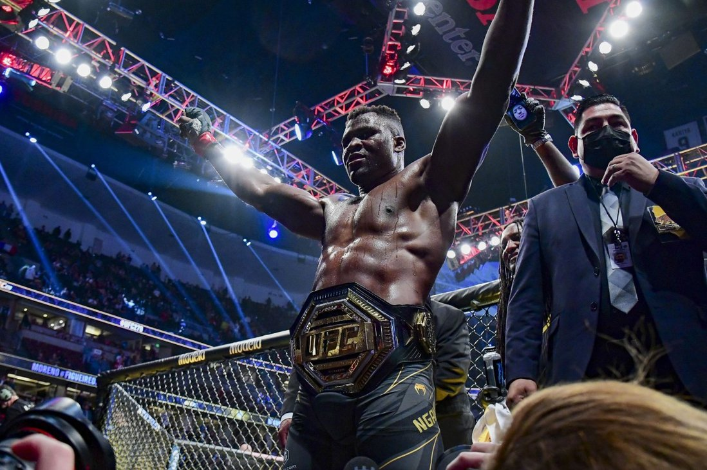

Blog Posts
Francis Ngannou: From Sand Miner to Heavyweight Champ

Details
Find out how much struggle and pain Francis Ngannou went through to get to the top of the UFC.
5 Skills Must Develop
Details
Take a look at 5 skills that can improve your way of thinking and help you make better decisions.
Tyson Fury and The World of Depression

Details
From the terrifying world of depresion to becoming one of the greatest heavyweight boxer in the world.
Featured Blog Posts
Check out these Blog Posts by other people
12 Things To Do at Home When You’re Bored
By: Inaas Asad

Details
We’ve all been there. You’re staring at the blank, white wall with absolutely nothing stirring in your brain.
Ways to Build Your Self-Confidence
By: Radhika Sharma

Details
In order to be self confident is to be secure in yourself and your capacities. At the point when you are giving a show or a discourse, it helps with self confidence – or possibly to imagine that you are.
The Transformation of Mike Tyson: “I Used To Hate Myself…”
By: Marcus Williams

Details
…the pain was so bad that I went back on drugs. Recovery is a drawn-out process, and without the continued encouragement of my support system, it would be close to impossible.